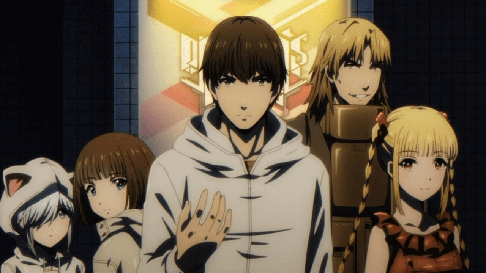

Le manga "Darwin's Game"
Darwin’s Game est un jeu d’apparence banale dont les joueurs se livrent à des combats depuis leur mobile. Grâce à une application leur permettant d’interagir entre eux, ils peuvent lancer des combats en quelques secondes. Tout débute lorsque Kaname, un lycéen ordinaire, installe l’application sans se méfier. Il découvrira brutalement une face insoupçonnée du jeu : celle de combats à mort dans lesquels les joueurs s’entretuent sans pitié, poussés par l’appât du gain. Dans Darwin’s Game, tuer un joueur rapporte des points échangeables contre de gigantesques sommes d’argent.
Le jeu dote aussi chacun de ses participants d’un pouvoir surnaturel, le « sigil ». Chaque individu dispose d’un sigil différent. Le pouvoir de notre héros sera de dupliquer armes et objets en un clin d’œil. Seulement, ni l’argent ni son pouvoir ne l’intéressent. Son objectif sera d’anéantir ce jeu, afin de retrouver sa paisible vie d’avant. C’est ce qu’il tentera de faire à tout prix, la survie de l’humanité en dépendant, au rythme de combats et de découvertes à glacer le sang.
Une portée philosophique inattendue
Outre l’abondance grandissante d’écrans dans nos vies quotidiennes, ce manga évoque plusieurs problématiques d’ordre philosophique et sociétal. Par exemple, l’attrait du genre humain pour l’argent et les biens matériels, le poussant à commettre tous les crimes possibles et imaginables pour se satisfaire. Aussi, l’ennui dans la société actuelle, qui survient de plus en plus aux besoins de survie de tous ses citoyens et les couve presque.
Un concept pas si inédit
Le jeu mobile évoqué dans ce manga est similaire dans son concept au célèbre Pokémon Go : les joueurs sont en permanence synchronisés entre eux et possèdent un avatar public sur le réseau. Celui-ci leur permet d’interagir avec les autres via leur propre avatar. Leur smartphone communique en permanence avec de gros serveurs et autres datacenters, afin de garder leur profil à jour. Ces infrastructures, couplées à un tel mode d’utilisation, sont connues pour leur impact négatif sur l’environnement. Notamment, le réchauffement climatique.
Le succès attendu
Darwin’s Game a fait du chemin depuis sa création en 2012 ! Fort de son succès dans le monde entier, le manga, qui compte actuellement 21 tomes tous traduits en français, a été adapté en série animée début 2020. Onze épisodes sont déjà sortis. Quant au style graphique, on retrouve celui de Nekogami Yaoyorozu, précédent manga du duo Flipflops.